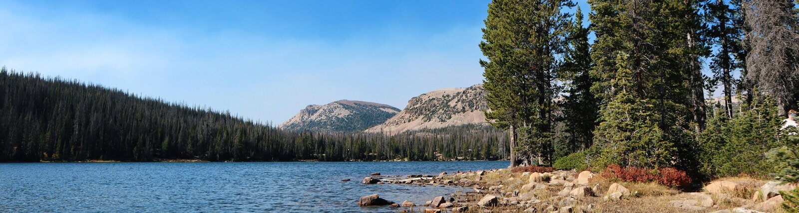

Our Favorite Rivers
Desolation and Gray Canyon, Utah
Winding through canyons in central Utah, in some of the most desolate land anywhere, the Green river flows towards the mighty Colorado river and the sea. High grey stone cliffs, beautiful desert scenery, and great rapids have made this run famous. This 84-mile trip runs from from Sand Wash to Swaseys Rapid (just outside Green River Utah) and boasts outstanding scenery, interesting geologic formations, evidence of prehistoric and historic human activity, and great whitewater opportunities.
Main Fork of the Salmon River, Idaho
Nestled deep in the Frank Church Wilderness of No Return winds the Salmon river. The Salmon was given the nickname long ago as the River of No Return by the people living near it because of the number of folks that came to visit and fell so in love with the rugged beauty of the river that they never left.

Grand canyon, Arizona
Grand Canyon river rafting combines world-class whitewater with breathtaking scenery to make one truly unforgettable river experience. The canyon is filled not only with exhilarating whitewater rapids, but with side canyons and ancient indian ruins accessible only by river.